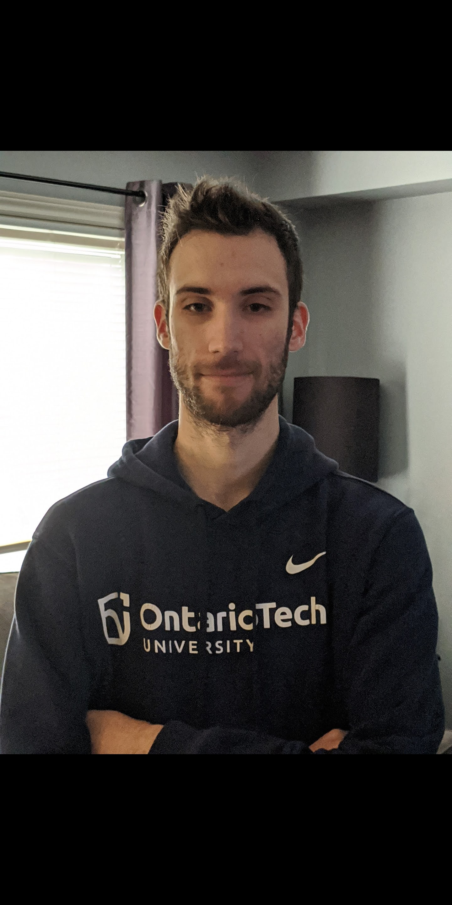
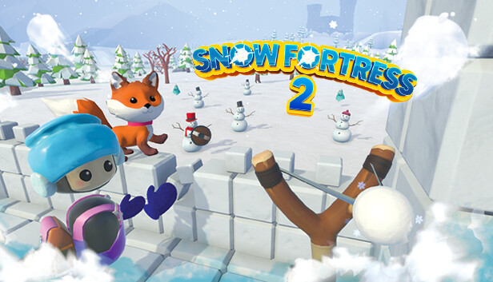
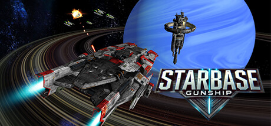

Christian Ceccarelli
Aspiring fullstack developer

About
Contact Me
Work Experience
Electrical Tester (Panel Shop), Brock Solutions
July 2024 – Present
- Tested electrical panels according to engineering drawings and specifications.
- Inspecting industrial control panels according to drawings and project requirements.
- Ensuring correct terminations meeting the specified torque requirements.
Unity Developer, Mythical City Games
September 2021 - January 2024
- Developed and maintained VR and non-VR games using Unity and C#, ensuring optimized performance across platforms.
- Refactored existing projects to enhance functionality and integrate new features tailored to evolving project requirements.
- Successfully integrated PlayFab cloud storage to enhance game data management and player experience for Android applications.
- Designed and implemented interactive web-based applications to showcase commercial property features to prospective clients.
- Collaborated with cross-functional teams to troubleshoot and resolve development challenges, maintaining project timelines.
Key Projects
- SNOW FORTRESS 2 | Mythical City Games:VR developed game, enhancing player immersion through physics-based interactions and optimized frame rates.

- Interactive Property Viewer | Mythical City Games:Designed a Javascript based web application enabling dynamic interaction with 3D models for commercial real estate clients.
- STARBASE GUNSHIP | Mythical City Games:Contributed to the development of this game, focusing on gameplay mechanics, optimization, and controller support.

Education
Bachelor of Game Development and Entrepreneurship
Ontario Tech University – Oshawa, ON
September 2016 – May 2021
Technical Skills
- Game Development: Unity, Photon Networking
- Programming: C#, JavaScript, Object-Oriented Programming
- VR/AR Development: Virtual Reality Optimization, Cross-Platform Deployment
- Version Control: Git, GitHub
- Cloud Integration: PlayFab